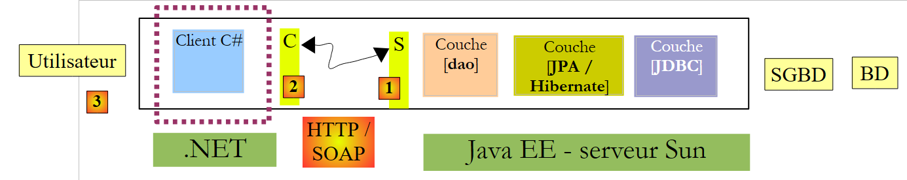
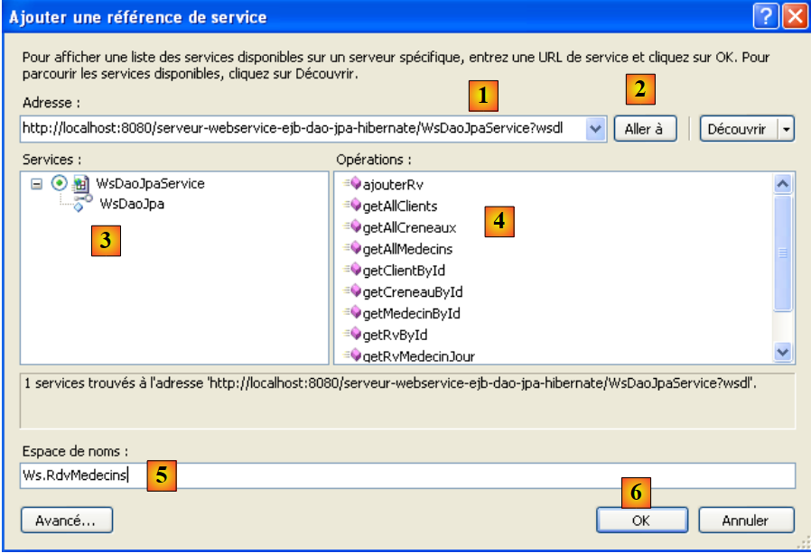
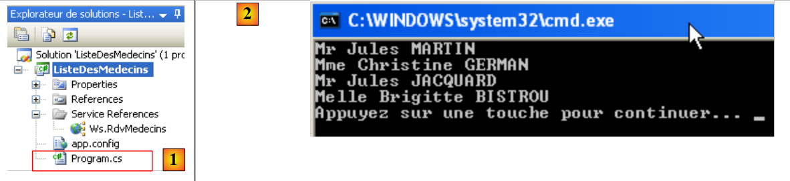
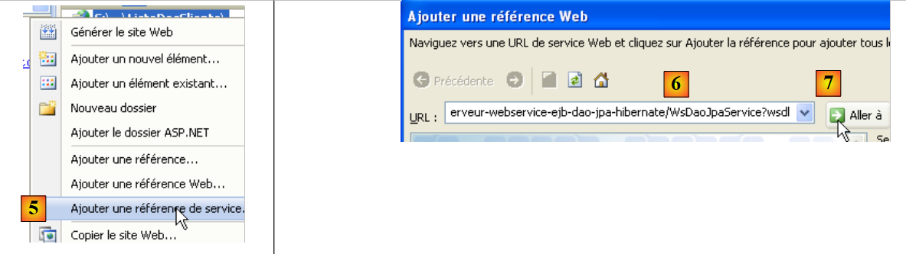
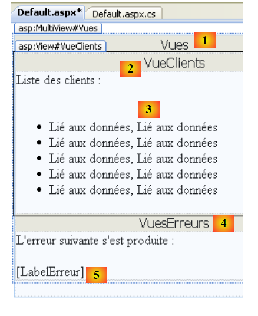
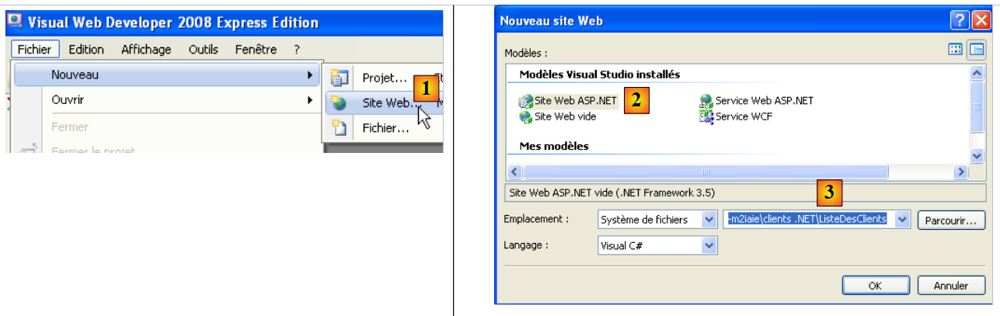
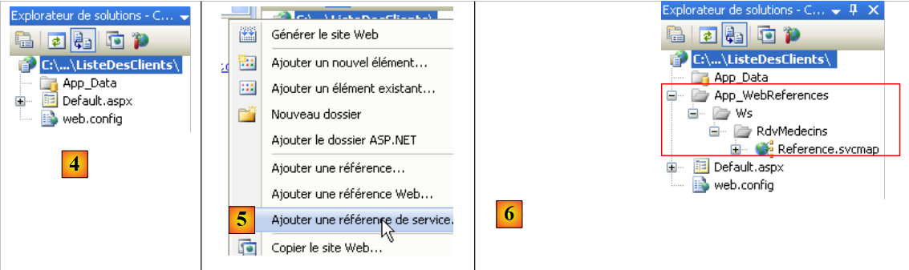

5. عملاء .NET لخدمة المواعيد J2EE
5.1. عميل C# 2008
سنفترض الآن أن خدمة الويب السابقة متاحة ونشطة. يمكن استخدام خدمة الويب من قبل عملاء مكتوبين بلغات مختلفة. هنا، سنكتب عميل وحدة تحكم C# لعرض قائمة الأطباء.
 |
لنبدأ بإنشاء مشروع C#:
 |
نقوم بإنشاء تطبيق سطر أوامر [1] باسم [ListeDesMedecins] [2]. في [3]، نقوم بإنشاء مرجع إلى خدمة ويب. هذه الأداة مشابهة لتلك المستخدمة في NetBeans: فهي تنشئ وكيلًا محليًا لخدمة الويب البعيدة.
 |
- في [1]، حدد عنوان URI لملف WSDL الخاص بخدمة الويب (انظر القسم 4.10.2).
- في [2]، نطلب من المعالج اكتشاف خدمات الويب المعروضة في عنوان URI هذا
- في [3]، يتم عرض خدمة الويب التي تم العثور عليها، وفي [4]، يتم عرض الطرق التي تعرضها.
- في [5]، حدد مساحة الاسم التي يجب إنشاء فئات الوكيل C فيها
- في [6]، يتم إنشاء الوكيل C.
 |
- في [1]، مرجع الويب الذي أنشأناه للتو. انقر عليه نقرًا مزدوجًا.
- في [2]، تم فتح مستكشف الكائنات بالنقر المزدوج.
- في [3]، حدد مساحة الاسم [ListeDesMedecins.Ws.RdvMedecins]، وهي مساحة اسم الوكيل C الذي تم إنشاؤه. المصطلح الأول [ListeDesMedecins] هو مساحة الاسم الافتراضية لتطبيق C# الذي تم إنشاؤه (أطلقنا عليه اسم ListeDesMedecins). المصطلح الثاني [Ws.RdvMedecins] هو مساحة الاسم التي قمنا بتعيينها للوكيل C في المعالج. في النهاية، تنتمي كائنات الوكيل C إلى مساحة الاسم [ListeDesMedecins.Ws.RdvMedecins].
- في [4]، كائنات الوكيل C الذي تم إنشاؤه
 |
- في [5]، [WsDaoJpaClient] هي الفئة التي تنفذ محليًا أساليب خدمة الويب البعيدة.
- في [6]، طرق فئة [WsDaoJpaClient]. هنا نجد طرق خدمة الويب البعيدة، مثل طريقة getAllClients في [7].
دعونا نفحص كود الكيانات التي تم إنشاؤها:
 |
في [1] أعلاه، نطلب عرض كود فئة [client]:
...
public partial class client : personne {
}
....
public partial class personne : object, System.ComponentModel.INotifyPropertyChanged {
...
public long id {
...
}
...
}
أعلاه، قمنا بتضمين الكود الضروري لدراستنا فقط.
- السطر 2: فئة [customer] مشتقة من فئة [person]، تمامًا كما هو الحال في خدمة الويب.
- السطر 8: خاصية عامة لفئة [person]
ما نلاحظه هو أن الكود الذي تم إنشاؤه لا يتبع قواعد الترميز القياسية في لغة C#. يجب أن تبدأ أسماء الفئات والخصائص العامة بحرف كبير.
لنعد إلى تطبيق C# الخاص بنا:
 |
[Program.cs] [1] هي فئة الاختبار. وفيما يلي شفرة البرمجة الخاصة بها:
using System;
using ListeDesMedecins.Ws.RdvMedecins;
using Client = ListeDesMedecins.Ws.RdvMedecins.client;
namespace ListeDesMedecins {
class Program {
static void Main(string[] args) {
try {
// client [dao] layer instantiation
WsDaoJpaClient dao = new WsDaoJpaClient();
// list of doctors
foreach (Client client in dao.getAllClients()) {
Console.WriteLine(String.Format("{0} {1} {2}", client.titre, client.prenom, client.nom));
}
} catch (Exception e) {
Console.WriteLine(e);
}
}
}
}
في السطر 12، يتم استخدام فئة [Client] من الوكيل C، على الرغم من أننا رأينا للتو أنها كانت تسمى في الواقع [client]. إن الإعلان الموجود في السطر 3 هو الذي يسمح لنا باستخدام [Client] بدلاً من [client]. وهذا يسمح لنا بالامتثال لقواعد تسمية الفئات. وفي السطر 12 أيضًا، يتم استخدام الأسلوب [getAllClients] لأن هذا هو الاسم الذي يطلق عليه في الوكيل C. ويتطلب معيار البرمجة في C# أن يطلق عليه [GetAllClients].
يؤدي تشغيل البرنامج السابق [1] إلى النتائج الموضحة في [2].
5.2. أول عميل ASP.NET 2008
سنقوم الآن بكتابة أول عميل ASP.NET / C# لعرض قائمة العملاء.
 |
في هذه البنية، يوجد خادمان ويب:
- الخادم الذي يشغل خدمة الويب البعيدة
- الخادم الذي يشغل عميل ASP.NET لخدمة الويب البعيدة
سنقوم بإنشاء مشروع الويب لعميل ASP.NET باستخدام Visual Web Express 2008 SP1. يوضح القسم التالي كيفية إنشاء نفس المشروع إذا لم يكن لديك Visual Web Express 2008 SP1.
 |
نقوم بإنشاء تطبيق ويب [1، 2، 3] باسم [ClientList1] [4، 5، 6]. يظهر المشروع الذي تم إنشاؤه بهذه الطريقة في [7].
 |
- في [5]، انقر بزر الماوس الأيمن على اسم المشروع لإضافة مرجع خدمة ويب.
- في [6]، حدد عنوان URI لملف WSDL الخاص بخدمة الويب (انظر القسم 4.10.2).
- في [7]، اطلب من المعالج اكتشاف خدمات الويب المعروضة في عنوان URI هذا
 |
- في [8]، يتم عرض خدمة الويب التي تم العثور عليها، وفي [9]، يتم عرض الطرق التي تعرضها.
- في [10]، حدد مساحة الاسم التي يجب إنشاء فئات الوكيل C فيها
- في [11]، مرجع خدمة الويب التي تم إنشاؤها
يؤدي النقر المزدوج على المرجع [Ws.Rdvmedecins] [12] إلى عرض الفئات والواجهات التي تم إنشاؤها للوكيل C:
 |
- في [1]، مستكشف الكائنات الذي تم فتحه بالنقر المزدوج.
- في [2]، حدد مساحة الاسم [ListeDesClients1.Ws.RdvMedecins]، وهي مساحة الاسم للوكيل C الذي تم إنشاؤه. المصطلح الأول [ListeDesClients1] هو مساحة الاسم الافتراضية لتطبيق ASP.NET الذي تم إنشاؤه (أطلقنا عليه اسم ListeDesClients1). المصطلح الثاني [Ws.RdvMedecins] هو مساحة الاسم التي قمنا بتعيينها للوكيل C في المعالج. في النهاية، تنتمي كائنات الوكيل C إلى مساحة الاسم [ListeDesClients1.Ws.RdvMedecins].
- في [3]، كائنات الوكيل C الذي تم إنشاؤه
 |
- في [4]، [WsDaoJpaService] هي الفئة التي تنفذ محليًا أساليب خدمة الويب البعيدة.
- في [5]، طرق فئة [WsDaoJpaService]. هنا نجد طرق خدمة الويب البعيدة، مثل طريقة getAllClients في [6].
دعونا نفحص كود الكيانات التي تم إنشاؤها:
 |
في [1] أعلاه، نطلب عرض كود فئة [client]:
public partial class client : personne {
}
...
public partial class personne {
...
public long id {
...
}
أعلاه، قمنا بتضمين الكود الضروري لدراستنا فقط.
- السطر 1: تنبثق فئة [client] من فئة [person]، تمامًا كما هو الحال في خدمة الويب.
- السطر 5: فئة [person]
- السطر 7: خاصية عامة لفئة [person]
هذا الرمز مشابه للرمز الذي تمت مناقشته بالفعل لعميل C# في القسم 5.1.
- مساحة اسم الوكيل C الذي تم إنشاؤه هي تلك المحددة في معالج الإنشاء الخاص به، مسبوقة بمساحة اسم مشروع الويب نفسه: ListeDesClients1.Ws.RdvMedecins
- تسمى فئة الوكيل التي تنفذ محليًا أساليب خدمة الويب البعيدة WsDaoJpaService.
- تبدأ أسماء الفئات والخصائص بحرف صغير
يمكننا كتابة صفحة [Default.aspx] تعرض قائمة العملاء. وتكون الصفحة كما يلي:
 |
رقم | النوع | الاسم | الدور |
MultiView | طرق العرض | حاوية العرض | |
عرض | CustomerView | عرض القائمة التي تحتوي على قائمة العملاء | |
مكرر | RepeaterClients | يعرض قائمة العملاء كقائمة نقطية | |
عرض | ErrorView | العرض الذي يعرض أي أخطاء | |
التسمية | تسمية الخطأ | نص الخطأ |
رمز هذه الصفحة هو كما يلي:
<%@ Page Language="C#" AutoEventWireup="true" CodeBehind="Default.aspx.cs" Inherits="ListeDesClients1._Default" %>
<%@ Import Namespace="ListeDesClients1.Ws.RdvMedecins" %>
<!DOCTYPE html PUBLIC "-//W3C//DTD XHTML 1.1//EN" "http://www.w3.org/TR/xhtml11/DTD/xhtml11.dtd">
<html xmlns="http://www.w3.org/1999/xhtml">
<head id="Head1" runat="server">
<title>Liste des clients</title>
</head>
<body>
<form id="form1" runat="server">
<div>
<asp:MultiView ID="Vues" runat="server">
<asp:View ID="VueClients" runat="server">
Liste des clients :<br />
<br />
<ul>
<asp:Repeater ID="RepeaterClients" runat="server">
<ItemTemplate>
<li>
<%#(Container.DataItem as client).nom%>,
<%#(Container.DataItem as client).prenom%>
</li>
</ItemTemplate>
</asp:Repeater>
</ul>
</asp:View>
<asp:View ID="VuesErreurs" runat="server">
L'erreur suivante s'est produite :<br />
<br />
<asp:Label ID="LabelErreur" runat="server"></asp:Label></asp:View>
</asp:MultiView><br />
</div>
</form>
</body>
</html>
لاحظ، في السطر 3، الحاجة إلى استيراد مساحة الاسم [ListeDesClients1.Ws.RdvMedecins] من وكيل C لخدمة الويب حتى يمكن الوصول إلى فئة [client] في السطرين 20 و21.
في السطر 3، لاحظ ضرورة استيراد مساحة الاسم [ListeDesClients1.Ws.RdvMedecins] من وكيل C لخدمة الويب حتى يمكن الوصول إلى فئة [client] في السطرين 20 و21.
using System;
using ListeDesClients1.Ws.RdvMedecins;
namespace ListeDesClients1
{
public partial class _Default : System.Web.UI.Page
{
protected void Page_Load(object sender, EventArgs e)
{
try
{
// local proxy instantiation of remote [dao] layer
WsDaoJpaService dao = new WsDaoJpaService();
// customer view
Vues.ActiveViewIndex = 0;
// client view initialization
RepeaterClients.DataSource = dao.getAllClients();
RepeaterClients.DataBind();
}
catch (Exception ex)
{
// error view
Vues.ActiveViewIndex = 1;
//initialization error view
LabelErreur.Text = ex.ToString();
}
}
}
}
- السطر 8: يتم تنفيذ الأسلوب Page_Load عند تحميل الصفحة لأول مرة. ويحدث هذا التحميل في كل مرة يطلب فيها العميل الصفحة.
- السطر 13: يتم إنشاء مثيل للوكيل C المحلي. يقوم هذا الوكيل C بتنفيذ واجهة خدمة الويب البعيدة. سيتواصل التطبيق مع هذا الوكيل C.
- السطر 15: إذا لم تحدث أي استثناءات أثناء إنشاء مثيل الوكيل المحلي C، فيجب عرض العرض المسمى "VueClients"، أي العرض رقم 0 في MultiView "Vues" للصفحة.
- السطر 17: مصدر بيانات المكرر هو قائمة العملاء التي توفرها طريقة getAllClients للوكيل C.
- السطر 23: إذا حدث استثناء عند إنشاء مثيل الوكيل C المحلي، يجب عرض العرض المسمى "VueErreurs"، أي العرض رقم 1 في MultiView "Vues" للصفحة.
- السطر 25: يتم عرض الاستثناء في التسمية "LabelErreur".
يؤدي تشغيل مشروع الويب إلى النتيجة التالية:
 |
5.3. عميل ASP.NET 2008 ثانٍ
سنقوم الآن بكتابة عميل ASP.NET / C# ثانٍ، هذه المرة باستخدام إصدار Visual Web Developer Express 2008 الذي سبق SP1.
 |
لنقم بإنشاء مشروع ويب عميل .NET:
 |
ننشئ موقع ويب [1، 2] باسم [ClientList] [3].
 |
- في [4]، مشروع الويب
- في [5]، بالنقر بزر الماوس الأيمن على اسم المشروع، نضيف مرجع خدمة كما فعلنا سابقًا.
- في [6]، المشروع بمجرد إضافة الإشارة إلى خدمة الويب البعيدة
على عكس مشروع الويب SP1 الذي تمت مناقشته سابقًا، لا يمكننا الوصول إلى كائنات عميل خدمة الويب عبر مستكشف الكائنات.
ملاحظة مهمة:
- مساحة اسم الوكيل C الذي تم إنشاؤه هي تلك المحددة في معالج الإنشاء الخاص به: Ws.RdvMedecins
- تسمى فئة الوكيل التي تنفذ محليًا أساليب خدمة الويب البعيدة WsDaoJpaClient.
- تبدأ أسماء الفئات والخصائص بحرف صغير
يمكننا كتابة صفحة [Default.aspx] تعرض قائمة العملاء. وتكون الصفحة كما يلي:
 |
رقم | النوع | الاسم | الدور |
MultiView | طرق العرض | حاوية العرض | |
عرض | عرض العميل | عرض يحتوي على قائمة العملاء | |
مكرر | مكرر العملاء | يعرض قائمة العملاء كقائمة نقطية | |
عرض | ErrorView | العرض الذي يعرض أي أخطاء | |
التسمية | تسمية الخطأ | نص الخطأ |
رمز هذه الصفحة هو كما يلي:
<%@ Page Language="C#" AutoEventWireup="true" CodeFile="Default.aspx.cs" Inherits="_Default" %>
<%@ Import Namespace="Ws.RdvMedecins" %>
<!DOCTYPE html PUBLIC "-//W3C//DTD XHTML 1.1//EN" "http://www.w3.org/TR/xhtml11/DTD/xhtml11.dtd">
<html xmlns="http://www.w3.org/1999/xhtml">
<head id="Head1" runat="server">
<title>Liste des clients</title>
</head>
<body>
<form id="form1" runat="server">
<div>
<asp:MultiView ID="Vues" runat="server">
<asp:View ID="VueClients" runat="server">
Liste des clients :<br />
<br />
<ul>
<asp:Repeater ID="RepeaterClients" runat="server">
<ItemTemplate>
<li>
<%#(Container.DataItem as client).nom%>, <%#(Container.DataItem as client).prenom%>
</li>
</ItemTemplate>
</asp:Repeater>
</ul>
</asp:View>
<asp:View ID="VuesErreurs" runat="server">
L'erreur suivante s'est produite :<br />
<br />
<asp:Label ID="LabelErreur" runat="server"></asp:Label></asp:View>
</asp:MultiView><br />
</div>
</form>
</body>
</html>
لاحظ، في السطر 2، الحاجة إلى استيراد مساحة الاسم [Ws.RdvMedecins] من وكيل C لخدمة الويب حتى يمكن الوصول إلى فئة [client] في السطر 19.
في السطر 19، يمكن الوصول إلى الفئة [client]
using System;
using Ws.RdvMedecins;
public partial class _Default : System.Web.UI.Page
{
protected void Page_Load(object sender, EventArgs e)
{
try
{
// local proxy instantiation of remote [dao] layer
WsDaoJpaClient dao = new WsDaoJpaClient();
// customer view
Vues.ActiveViewIndex = 0;
// client view initialization
RepeaterClients.DataSource = dao.getAllClients();
RepeaterClients.DataBind();
}
catch (Exception ex)
{
// error view
Vues.ActiveViewIndex = 1;
//initialization error view
LabelErreur.Text = ex.ToString();
}
}
}
هذا الكود مشابه لكود الإصدار السابق. يؤدي تشغيل مشروع الويب إلى النتيجة التالية: